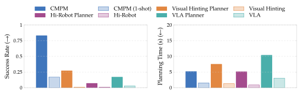
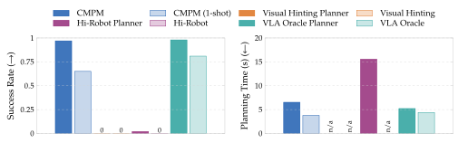
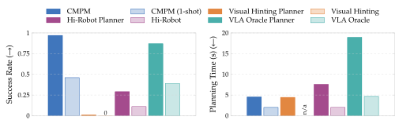
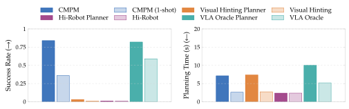

Chaining Visuomotor Skills for Constrained Manipulation
Through Perceptual Manipulation
Under review

Abstract
Long-horizon manipulation often requires constraints to be satisfied across several skills: how one skill is executed determines whether a later skill is feasible. Task and motion planning addresses these dependencies by searching jointly over the continuous parameters of each skill, but fixed visuomotor policies, including vision-language-action models, expose no such parameters. We introduce Constrained Manipulation through Perceptual Manipulation (CMPM), a deployment-time method that parameterizes a fixed visuomotor policy by transforming its visual observations. The policy acts on the transformed observation while its actions are executed in the true world, so different transformations induce different closed-loop behaviors without changing the policy itself. A bilevel planner searches over these transformations alongside conventional parameters such as grasps and placement poses, rolls out the resulting skill sequence in simulation, and retains refinements that satisfy constraints of the task. We evaluate CMPM in four simulated environments, with one of them demonstrated on a real robot through real-to-sim-to-real transfer, and our experiments show that perceptual transformations can expose useful continuous choices in otherwise fixed visuomotor skills, allowing them to participate in planning under constraints that span multiple skills.
Method
We want to chain visuomotor skills with motion-planning skills under constraints that span several skills. Bilevel planning already resolves such constraints among motion-planning skills by searching over their parameters during refinement; what prevents it from doing the same for a visuomotor skill is that the skill has no parameters to search over. Rather than training a policy that accepts parameters, we endow an existing policy with a parameter space by transforming what it perceives: the policy acts on a transformed observation in place of the true one, and its actions are executed in the true world. The transformation is then a parameter like any other, and refinement searches over it exactly as it searches over grasps and placements. We refer to the approach as Constrained Manipulation through Perceptual Manipulation (CMPM).

Tasks
Pick and Place

Push

Ramp

Block

BibTeX
@inproceedings{anonymous,
title = {Chaining Visuomotor Skills for Constrained Manipulation
Through Perceptual Manipulation},
author = {Anonymous},
booktitle = {},
year = {}
}